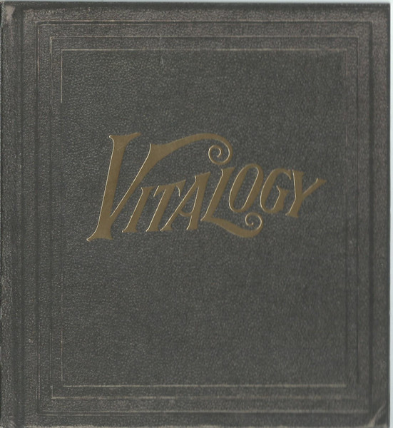

CD
Vitalogy
Pearl Jam
Cover P
Media: VG+ · Sleeve: P
CA$5.00
Discogs SuggestedCA$9.53
Discogs MedianCA$9.53
Discogs HighCA$9.53
- Physical Copy ID
- BB-CD-2310
- Year
- 1994
- Label
- Epic, Epic
- Catalog #
- EPC 477861 2, 477861 2
- Country
- Europe
- Genre / Style
- Rock · Grunge, Alternative Rock, Hard Rock